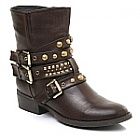
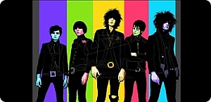
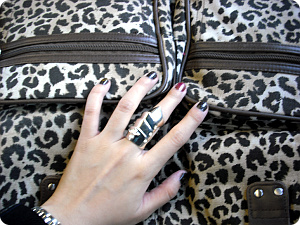

001. 큰 마감 2개가 끝났다;;1월달 정말정말 싫었음 ;ㅂ;29일날 Dissertation제출하고 정신줄 놨다;;게다가 당일(금요일) 저녁이랑 토욜 알바가느므느므 바빠서 정신차려보니 일요일&엄훠? 1월달 다 지나갔네0ㅂ0;;; ←요런상황;;;002. 이게 처음에는 그냥 성격차이이겠거니~했는데일본츠자들 3명이랑 같이살다보니까이게 국민성이라는건가??? 라는것도 살짝 느끼는것이;;암튼 이아가씨들 오버해서 걱정하고 호들갑떨고조그만거에도 어쩔줄 몰라하믄서 불안해하는거 짱임;;(일본여행가서 가게점원들 손님대하는 태도 생각하믄이해가 빠를듯^^;;;; 좋게말하면 대따대따대따 친절한거고나쁘게 말하면 바닥에 찰싹 엎드리기라도 할거 같은;;;)일본서 학교댕길때도 선생님이한국 유학생들한테는 잘못된 부분 지적을하거나 좀 싫은소리를 해도그냥 설렁설렁 받아넘기고 애들이 강한반면일본애들은 너무 약해서 무슨말 하기 조심스럽다는 말을들은적 있었는데;;;저번 Minor마감때도 그렇지만과제제출이 '마감당일 10시~오후4시사이 오피스에 제출할것'이라믄이 3명의 츠자는 전날에 출력/라벨/파일정리 등등 다 끝마치고(정말 말그대로 '제출'만 하면 될수있는 상태로 준비를 마친후)당일날 아침8시반에 집에서 출발해서8시45분에 학교에 도착 9시부터 학교에서 기다리다가10시 땡치면 오피스에 일착으로 제출을 하고 돌아와야 마음이 놓이는;;;;이런타입들이라;;;;상대적으로 제출당일 아침9시쯤 인나서 10시쯤 학교가서그제서야 라벨링이랑 파일정리하고 12시쯤 제출하는 내가 상대적으로 너무 닐리리~니나노~인것인게다 ㅡㅡ;;;;; 얘네들도 항상 나한테 "너는 항상 여유네~"라고 말을하니까반대로 나는 또내;;내가 너무 긴장감이없나? 싶기도하고 ㅡㅡ;;(녜;; 저 소심해용;; 근데 이 아가씨들이랑 같이살다보니상대적으로 왕 대인배처럼 보임^^;;;;)003. 방에 콕 박혀서 과제만하다보니스트레스발산은 역시 지르기;;난 복싱데이 끝나믄서 내 쇼핑도 끝날줄 알았지;;;당분간 뭐 안살줄 알았는데후폭풍이 무서웠음☞☜;;;;;;Clearance란 단어가 사람잡네용;;;;사실 발단은 12월에 본 호러즈 공연인데;;원체 깜장옷/어두운색 옷을 좋아하긴하는데호러즈 공연에서 아가들의 올 블랙의상 + 우연히 발견한 요↓ 앵클부츠로 올~~깜장으로 입어보고싶어+_+(←;;;;)까지 생각이 닿아서;;;과제하는 중간중간 열심히 뒤져보았으나역시 평소에는 자주 보이는것들도꼭 살려고 맘먹으면 안보이제 ㅡㅜ

런던 돌아댕기다보면 정말 많이보이는 가게인데russell and bromley라구이건 왜 온라인 페이지도 없는겨;ㅂ;버클/찡이 많다 = 이쁘다 라고 생각하는 나에겐;;워어~이건 사야해!!였는데 가격이 마이 비쌌음;; OTL게다가 셀도안해주심;; 챗챗그래서 거의 반 포기상태였다가 Barratts에서 똑같이 생긴걸 찾았다(R모씨 제품은 가죽이고 요놈은 스웨이드;;)게다가 막판 세일중이라 ￡75에서 ￡25까지 내려간!!!(russell and bromley제품은 ￡320인가 더 비쌌던가 했음;;)훗훗훗훗훗훗~주문했다 ;D그나저나 나 신발 고만산다고 한지 얼마안된거 같은데;;(아냐 그건 스니커즈였으니까 괜찮......;;;;)004. 인터넷에서 주문하면 거진 실패하믄서도질리지도 않고 이번에도;;;Urban Outfitters랑 House of Fraser에서 주문을 했는데;;우선Urban Outfitters는 대성공!!여기 세일이 매우 바람직해서 마음에 든다///게다가 예~~ㅅ날에 포스팅한맨날 한벌 더있었음 좋겠다고 노래를 부른 체크자켓+_+(줄무늬 체크 / 버클,찡 = 아이이뻐/// 전생에 무슨 수용소나 감옥에 수감되었었나;;;;)그리고 House of Fraser에서 주문한건 동네에 매장에서 입어본건데원하는 사이즈가 없어서 주문한거라 이상한 불량품이 오지 않는이상괜찮겠지;;(요거랑 부츠는 아직 기다리는중+_+)인터넷주문하믄 배송료도 ￡4~￡6이나 받으믄서기본적으로 4~5일은 걸리는 나라!!! 탯탯3일날 다시 학교시작하기 전에낼은 런던나들이~(유니크로 갈려고 런던가는 인간;;; 크흡;ㅂ;)내일로서 지름신이 이제 슬슬 떠나셔도 될거같음;ㅂ;

깜장옷의 로망(?)은 언제까지 지속될런지 ㅡㅡ;;;;이게 다 늬들때문이야!!! (뭐래;;;)

옷이나 악세사리 취향이 '요즘 아가씨들 사이에서 대 유행이에요~홋홋홋'요런거랑은 거리가 멀어서;;; 쇼핑할때마다항상 없는것만 찾는다는 타박도 심심치않게 듣는다;;게다가 김여사의 말에 따르믄옷도 옷이지만 어울리는 헤어랑 메이크업악세사리도 중요한데게을러서 평소에는 그냥 동네 양아치.......OTL역시 2010년의 목표는부지런하고 빠릿빠릿해지기 인겝니다;;;;